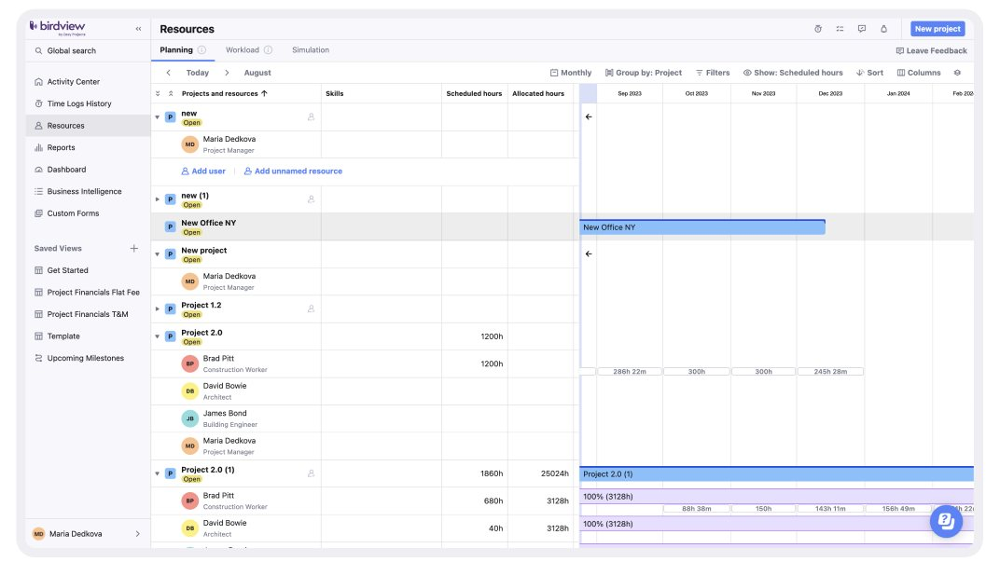
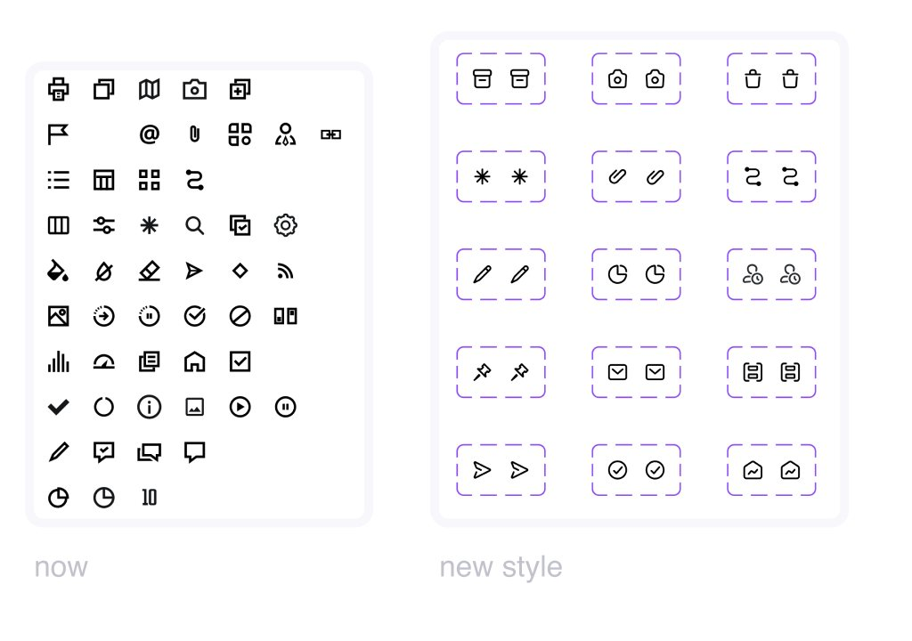
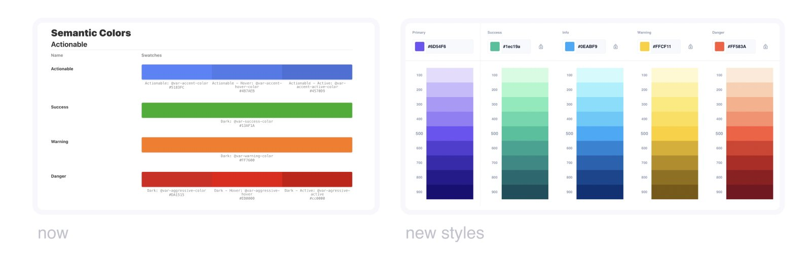
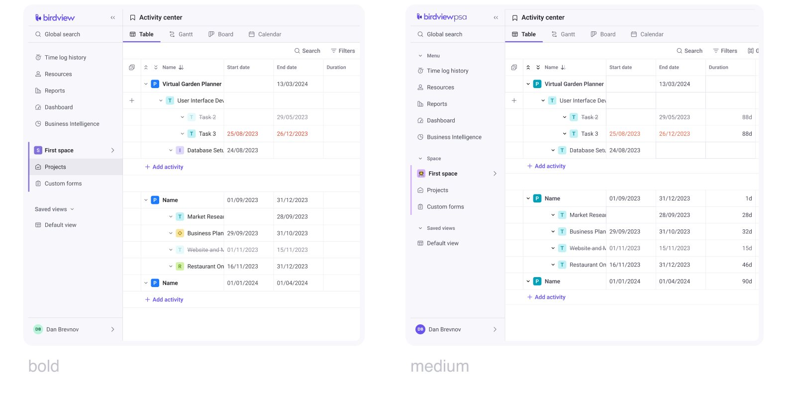
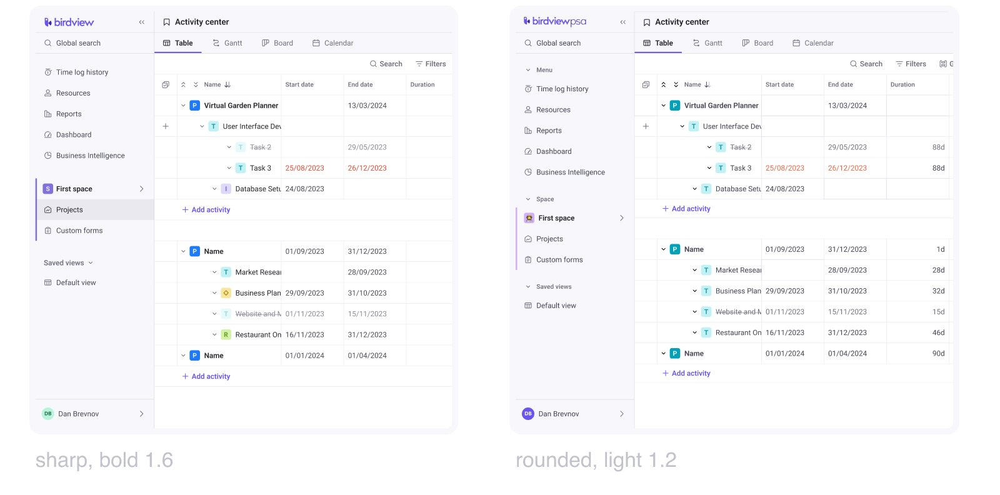
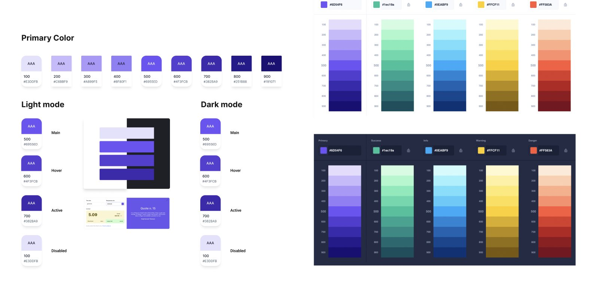
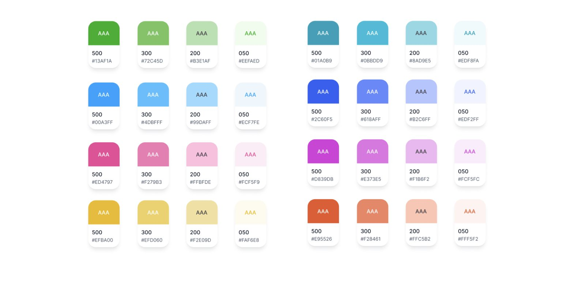
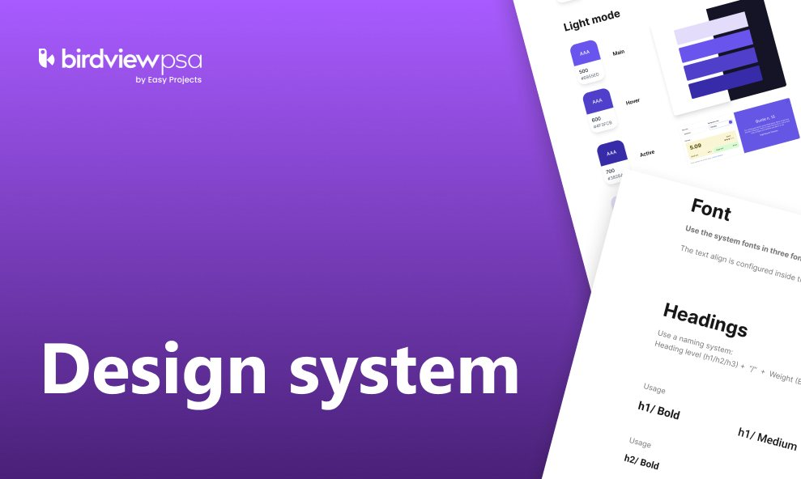
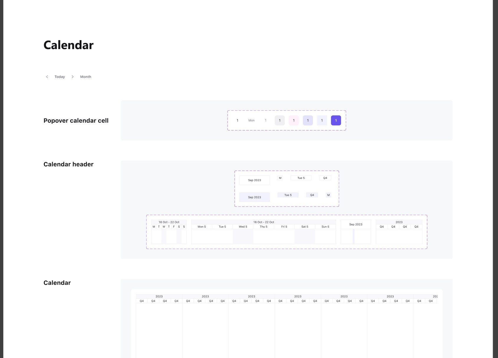

Case study · Birdview PSA · B2B SaaS · 2023 — 2024Кейс · Birdview PSA · B2B SaaS · 2023 — 2024
Resource planningПланирование ресурсовin Birdviewв Birdview
Who is busy, who is free, and how to fix it — on one screen.Кто занят, кто свободен и как это исправить — на одном экране.

The case in one minuteКейс за минуту
01 · OverviewКоротко
ProductПродукт
Birdview PSA: projects, people and finances in one placeBirdview PSA: проекты, люди и финансы в одном месте
ProblemПроблема
Overload and idle time were invisibleПерегруз и простои было не видно
My partМоя роль
The module end to end, research to componentsМодуль целиком, от исследования до компонентов
ImpactРезультат
Sales-assisted conversion 1.67% → 2.78%Конверсия sales-assisted 1.67% → 2.78%
Why the module was neededЗачем понадобился модуль
02 · Context and goalКонтекст и цель
Give managers control over resources at every level — from one specialist to the whole project.Дать менеджерам контроль над ресурсами на всех уровнях — от одного специалиста до всего проекта.
Resource managerРесурсный менеджер
Balances people across projectsРаспределяет людей по проектам
Project managerПроектный менеджер
Needs the right roles in timeНужны нужные роли вовремя
LeadershipРуководство
Wants capacity at a glanceХочет видеть ёмкость сразу
SpecialistСпециалист
Sees own load and bookingsВидит свою загрузку и брони
What was brokenЧто было не так
One line: double bookings, idle people, late staffing — and the cost.Одна строка: двойные брони, простои, поздний стаффинг — и чего это стоило.
From research to releaseОт исследования до релиза
03 · Design processПроцесс
- 01
DiscoverИсследование
- Audience and needsАудитория и потребности
- CompetitorsКонкуренты
- Market trendsТренды рынка
- 02
DefineПостановка
- Requirements with PMТребования с PM
- User flowsСценарии
- Design sprintsДизайн-спринты
- 03
DesignПроектирование
- ConceptКонцепция
- MockupsМакеты
- PrototypeПрототип
- 04
ValidateПроверка
- User testsТесты с пользователями
- IterationsИтерации
- Hand-offПередача в разработку
Resource planningРесурсное планирование
04 · Key featureГлавная фича
- Load at any scaleЗагрузка в любом масштабе
- Colour statusЦветовой статус
- PrioritiesПриоритеты
- Position statusСтатусы позиций
- Candidate matchingПодбор кандидатов
- Project proposalsПредложения по проектам
- Generic and namedДженерик и сотрудники
- Filters and granularityФильтры и гранулярность
- Requests and bookingЗаявки и бронь
Colour first, numbers secondСначала цвет, потом цифры
The state of the company reads before a single number.Состояние компании считывается раньше первой цифры.
Conflicts fixed in placeКонфликты — на месте
Two projects, one person: compare and rebalance without leaving.Два проекта, один человек: сравнить и перераспределить, не уходя.
The shortlist comes to the roleШортлист приходит к роли
Matched by role and skills; manual choice kept.Подбор по ролям и навыкам, ручной выбор остаётся.
One person, every projectОдин человек, все проекты
Drill down: what they do and what a booking changes.Детали: чем занят и что изменит бронь.
Requests with a clear statusЗаявки с понятным статусом
Send, approve, reject, book — in one list.Отправить, одобрить, отклонить, забронировать — в одном списке.
Try it yourselfПопробуйте сами
↗ · Interactive prototypeИнтерактивный прототип
Resolve an overload, drag bookings, staff a role.Разрулите перегруз, подвигайте брони, подберите человека.
Open full screenНа весь экранA calmer productПродукт спокойнее
05 · Bonus · UI refreshБонус · обновление UI
What was wrongЧто было не так




What we changedЧто изменили




Built from parts, not screensСобрано из частей, а не экранов
06 · Design systemДизайн-система

- ColoursЦвета
- TypographyТипографика
- IconsИконки
- ComponentsКомпоненты
- LayoutsЛейауты
- Dark modeТёмная тема

A feature became a sales argumentФича стала аргументом продаж
07 · ResultsРезультаты
of new clients use the moduleновых клиентов используют модуль
- 12%
enabled it in the feature labвключили на этапе feature lab
- 4%
adoption across paid accountsadoption среди платных аккаунтов
- 10%
feature retentionretention фичи
- 1.67 → 2.78%
sales-assisted → paidsales-assisted → платящие
What I learnedЧто я вынесла
08 · ReflectionВыводы
What workedЧто сработало
One or two lines.Одна-две строки.
What I would changeЧто сделала бы иначе
One or two lines.Одна-две строки.
NextДальше